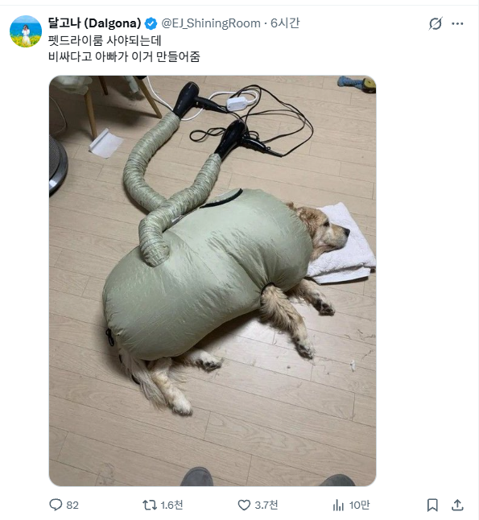
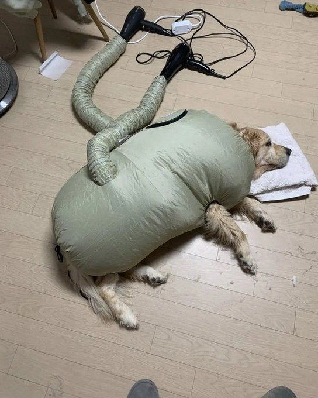

검색키워드좀 알려줘
강아지 드라이백 ㄱㄱ
ㄳㄳ
포켓몬에 저렇게 생긴거 있던거 같은데
드라이기 전기 많이 먹을텐데 동시에 한개 멀티탭에 괜찮나
밀봉해서 직빵으로 쓰는거라 고열로 하는건 아니라 갠찮을듯
저온 정도로 하면 될듯
요리하는게 아님??
개드라이룸
저거 잘못하면 불나서 화형식하게 생겼네. 아버지가 엔지니어링 센스가 없으신가보네.
뭐야 살짝씩 움직이네
뜨거운바람 역류하면 내부 필라멘트 녹아붙는데
공포의 물고기인줄
패딩 입은 강아지가 아니라 강아지 입은 패딩 같음
고열로 하면 화상으로 죽을텐데
당연히 저온이나 하나는 온도 안올리고 섞어서 하겠지
고열 ㄴㄴ 섞을필요 ㄴㄴ 좋은 드라이기는 온도조절도 됨
좋은 드라이기 쓸 집이면 흠..
찬바람으로 하지 당연
바람이 좀 나가야 털이 마르지
이게 수비든가 그거냐?
이런 안전 관련된거에선 돈 안 아꼈음 좋겠음 걱정 돼
불 안 나는 거 맞음?
이거 알리에서 샀는데 5분컷이라 좋음